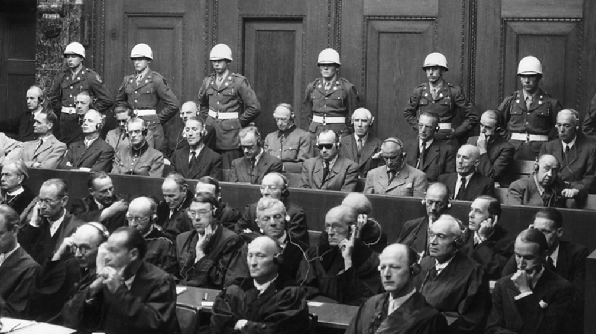

The aftermath of the Holocaust has left lasting marks on
all those affected by its horror - including survivors,
family members, and communities at large. The mental anguish
endured by many has contributed to ongoing struggles
throughout
life's course - yet out of darkness has come light in some
inspiring stories of perseverance and healing among its
survivors'
ranks . Despite unimaginable pain, some exhibit remarkable
strength
as they fight each day to put back together what was
shattered during
one of history's darkest moments - proving that hope can
indeed rise
from even our most devastating tragedies.
Elie Wiesel | Historical Figures of the
Holocaust | Yad Vashem
One such account comes from Elie
Wiesel, a Holocaust
survivor who endured
the horrors of Auschwitz and Buchenwald concentration camp.
Despite witnessing
unimaginable atrocities, Elie found the strength to rebuild
his life after the war.
He became a renowned writer and advocate for Holocaust
education, dedicating his
voice to ensuring that future generations would never forget
the atrocities committed
during that dark period of history.
IN POPULAR CULTURE
Movies contribute significantly to popular culture
particularly in
their depictions of the Holocaust. Filmmakers face
significant challenges
when portraying the horror and psychological impacts
resulting from this tragedy.
Some achieve extraordinary success in their efforts to
create cinematic masterpieces
that provoke thoughts while others fall short.
Anyways, numerous acclaimed movies on this subject have
left a remarkable mark on
audiences' hearts worldwide. One such film is Steven
Spielberg's Schindler's List (1993)
which documents Oskar Schindler's real life story - he
was a German industrialist who saved
over a thousand Jewish refugees during WWII by employing
them in his factory despite immense
oppositions from his own people who were involved in
Nazi Germany at the time. The film offers
raw and emotional insights into the atrocities committed
during that period -
it remains critically acclaimed today and continues to
be regarded as one of Hollywoods most
outstanding achievements ever for its potent blend of
historical truth with artistic execution.
Schindler's List
Another movie exploring this theme is Elem Klimov's' "Come
And See."
Screened in theaters back in 1985, it provides a deeper
look at Nazi occupation set in Belarus
during WWII. Following young Florya as he navigates
wartime struggles
audiences are exposed to a level of violence and
atrocity that feels all too real.
After viewing the portrayal of destruction and human
suffering
continues to resonate with viewers - emphasizing the
importance
of empathy.
Come and See
As we delve deeper into the Holocausts portrayal in
popular culture
its crucial to analyze these films with both
introspection and understanding.
We should acknowledge their potential but also their
shortcomings in accurately
depicting such a traumatic event in history.
INTERNATIONAL CRIMINAL COURT
The post World War II Allied forces held military
tribunals from 1945 to 1946 called The Nuremberg
Trials in Germany's city of Nuremberg . These trials
aimed to prosecute notable leaders , officials ,and
persons implicated in committing war crimes crimes
against humanity as well as other devastating
atrocities during World War II.

Nuremberg Trials
By doing so these were instrumental towards putting
forward legal precedents which further developed
international criminal law . As such they enshrined
crucial principles which emphasized accountability
for acts such as war crimes or those committed
against humanity. It is important too that this
initiative sought to hold accountable those who had
orchestrated the systematic persecution, brutality
,torture ,and genocide that characterized the
actions of the Nazi regime.
Following numerous indictments laid against
prominent Nazis during World War II it was revealed
that twelve faced execution while three walked free
after acquittal at Nuremberg Trials. Additional
verdicts saw others handed down varying prison
terms. The historic tribunals went on to serve as a
benchmark for subsequent legal proceedings aimed at
prosecuting atrocities committed during conflicts
worldwide including those directed by allied forces.
In particular this development culminated in a
global effort towards creating dedicated courts
specializing in addressing human rights abuses along
with other similar humanitarian concerns across
countries around the world.
FINAL THOUGHTS
When we study the Holocaust we uncover valuable
insights into a important moment in human history's
timeline. Exploring factors contributing to
totalitarian regimes' rise -Nazi Germany included-
provides us with an understanding that goes deeper
than basic knowledge of what happened during that
era. This comprehension helps us appreciate how
unchecked power abuse alongside propaganda tactics
can erode fundamental rights; thus lessons from
these events guide society towards preventing
similar atrocities in future.
The subject matter offers important lessons
highlighting how cruelty is just one outgrowth of
hate; prejudice and discriminations severe impacts
on society are equally significant. The Holocaust
serves as a reminder of the devastation that can
result when dehumanizing ideologies are allowed to
flourish.
Plus, along with lessons about resilience and
compassion stemming from survivors' personal
accounts it also emphasizes the importance of
ethical principles.
Studying about the Holocaust enables us to develop
critical thinking and ethical decision making
skills. Examining complex dynamics linking
individual responsibility, societal complicity, and
moral courage provides insight beyond historical
significance alone. The actions of
individuals who jeopardize their own safety to save
others inspire us to take a stand against wrongdoing
and champion human rights. Consequently we strive
towards fostering a more compassionate and inclusive
society.